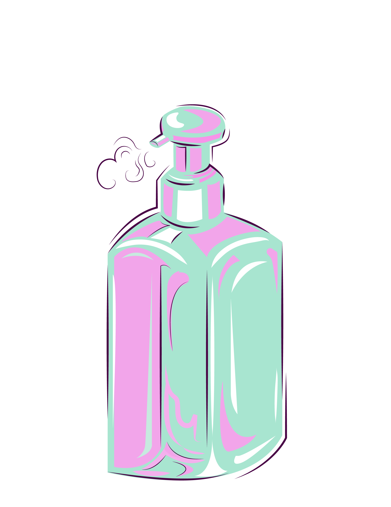
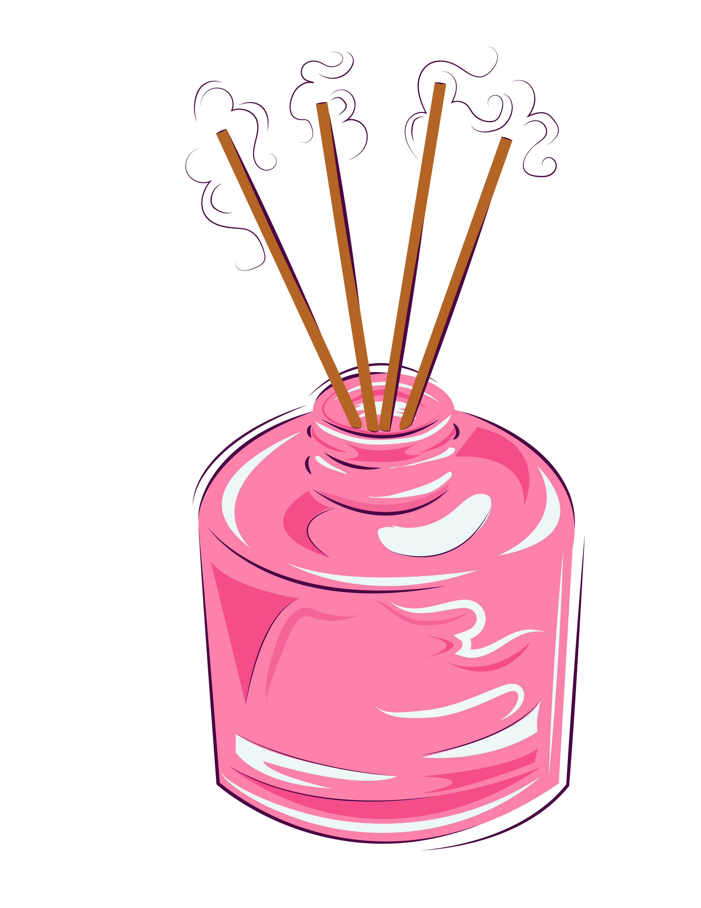
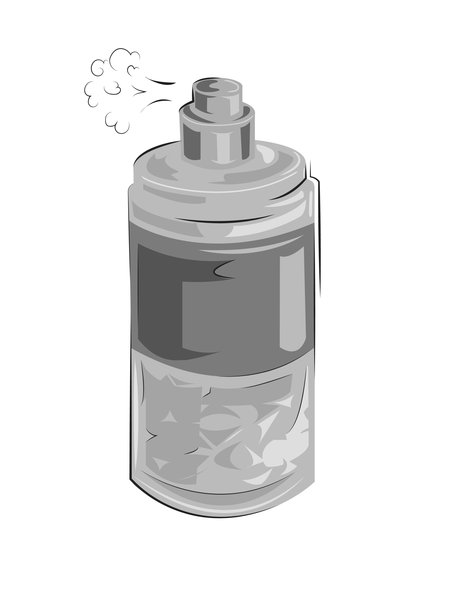
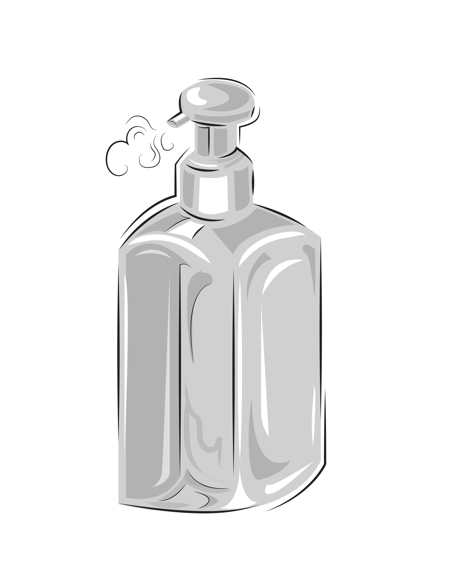
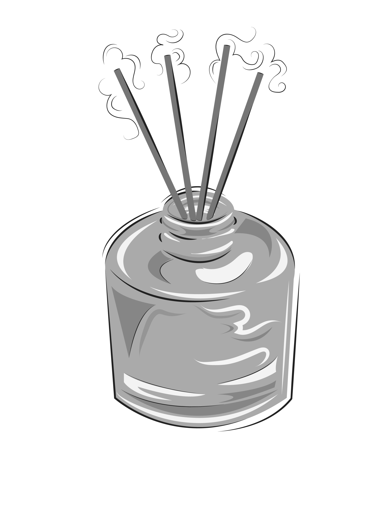

Scented Essentials






I created these icons as part of a school assignment, where I was prompted to build icons that represent items that play a role in my own life. While creating these icons, my challenge was conveying scents through purely visual means. Using Adobe Illustrator, I designed a clean and cohesive set of icons that captures the essence of items like perfume, diffusers, and lotions.
sandysri0711@gmail.com www.linkedin.com/in/sandy-srinivasan